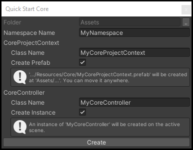
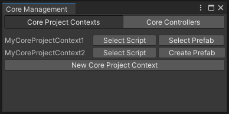
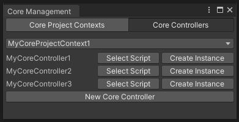

Getting Started
Before you begin working with AlchemyBow.Core, it’s essential to learn about two key classes:
- CoreProjectContext: A base class that is used to store shared dependencies at the global (project) scope. Typically, you’ll define a single class derived from it and create a prefab to store its instance in your project’s
Resources folder(atAssets/*/Resources/Core/YourCoreProjectContextClassName.prefab). - CoreController: A base class that serves as a scene-level handler for the framework. At a minimum, you need to define one class derived from it and attach it to a GameObject in your starting scene.
Basic Configuration with Quick Start Core Window
The Quick Start Core Window is a convenient tool that helps you quickly set up a basic configuration for your project.

- Open the window by navigating to:
Window > AlchemyBow > Core > Quick Start Core - In the Core Quick Start Window, follow these steps:
- Select the destination folder for the generated files.
- Enter an optional namespace name (if applicable).
- Specify the desired class names for your CoreProjectContext and CoreController.
- Choose whether to:
- Create a CoreProjectContext prefab.
- Create a CoreController instance.
Advanced Editing with the Core Management Window
For more advanced editing options, you can use the Core Management Window. This tool provides a centralized interface for managing key components of your project.


Navigate to: Window > AlchemyBow > Core > Core Management.
The window is divided into two tabs:
- Core Project Contexts: Review, select, and quickly create CoreProjectContext scripts and prefabs.
- Core Controllers: Review, select, and quickly create CoreController scripts and scene instances.
Starting Manually
Create a class inheriting from CoreProjectContext.
using AlchemyBow.Core;
using System.Collections.Generic;
public class MyCoreProjectContext : CoreProjectContext
{
protected override IEnumerable<ICoreLoadable> GetLoadables()
{
return null;
}
}
Then, create a prefab and place it in the Resources folder under the path: Core/NameOfYourCoreProjectContextClass.
Example: Assets/Resources/Core/MyCoreProjectContext.prefab.
Next, create a class that inherits from CoreController, using your custom CoreProjectContext type as the generic parameter.
using AlchemyBow.Core;
using System.Collections.Generic;
public class MyCoreController : CoreController<MyCoreProjectContext>
{
protected override IEnumerable<ICoreLoadable> GetLoadables()
{
return null;
}
}
At the end, create a new GameObject in your starting scene and attach your custom CoreController to it.
Life circle
If you followed the instructions in the previous sections, you can press the Play button. While nothing visually special will happen, the framework is already up and running. The next steps primarily involve overriding abstract and virtual methods in the CoreController and CoreProjectContext classes. To understand their responsibilities and how to customize them, it's helpful to analyze the framework's life cycle.

1. Starting Stage
At the Awake message, the CoreController starts, and the CoreController.OnStarted(OperationHandle) method is called. You can override this method to implement early logic, such as enabling a loading screen. However, keep in mind that dependencies are not injected at this stage.
Tip
The OperationHandle parameter is used for methods that are expected to perform multi-frame operations. For example, in the OnStarted() method, you can initiate a coroutine or run a task in another thread. The CoreController will wait until OperationHandle.MarkDone() is called before proceeding.
2. Binding Stage
The Binding Stage is responsible for handling dependency injection.
First, the CoreController ensures that the CoreProjectContext exists. If it doesn’t, the following three steps are performed:
- The project context prefab is instantiated and moved to DontDestroyOnLoad.
- The project context installs bindings from its MonoInstallers list and calls
CoreProjectContext.InstallAdditionalBindings(). You can override this method to add custom binding logic. - All project context dependencies are resolved in its container.
Next, the contents of the CoreProjectContext.Container are copied to the CoreController.Container (note that dynamic collection bindings are sealed during this process).
Afterward, the CoreController installs bindings from its own MonoInstallers list and calls CoreController.InstallAdditionalBindings(). You can override this method to include custom binding logic specific to the controller.
Finally, the CoreController resolves all dependencies and calls CoreController.OnBindingFinished().
3. Loading Stage
The Loading Stage is dedicated to performing time-consuming operations, such as loading assets or resources, while also providing designated places for initialization and cleanup. It consists of the following steps:
- Wait for the realtime seconds delay specified by
CoreController.PreLoadingDelay. - Retrieve the loadables (ICoreLoadable) returned by:
CoreProjectContext.GetLoadables()(only during the first loading)CoreController.GetLoadables()(during each subsequent loading)
- Load each loadable sequentially. You can override
CoreController.OnLoadablesProgressed(LoadablesProgress)to track the loading progress. This allows you to, for example, update your loading screen. - Wait for the realtime seconds delay specified by
CoreController.PostLoadingDelay. - Wait for the previous scene to finish unloading (if applicable).
Finally, once all loading operations are completed, CoreController.OnLoadingFinished() is called. The default implementation of this method triggers related callbacks from the ICoreLoadingCallbacksHandler.
For more details on ICoreLoadable and ICoreLoadingCallbacksHandler, see the Loading section.
4. Working Stage
The Working Stage defines the operations that occur between the loading and unloading phases. While it is recommended to use a state machine for managing transitions and states (see: stateful behaviour), it is not mandatory. You are free to use any method or approach that suits your project needs.
5. Unloading Stage
The Unloading Stage is the final phase in the scene scope life cycle - for CoreController. It begins when you call CoreController.ChangeScene(int) and consists of the following steps:
CoreController.OnSceneChangeStarted(): The default implementation of this method triggers related callbacks from the ICoreLoadingCallbacksHandler. For more details, refer to the Loading section.
CoreController.OnKeepUnloading(OperationHandle): You can override this method to smoothly clean up external resources, such as additional scenes or assets that are no longer needed.
Warning
If you are using the UnityEngine.UI package, make sure to add the following line to the CoreController.OnSceneChangeStarted() method: UnityEngine.EventSystems.EventSystem.current.enabled = false;. Failing to do so may cause the event system to crash during the scene change process.